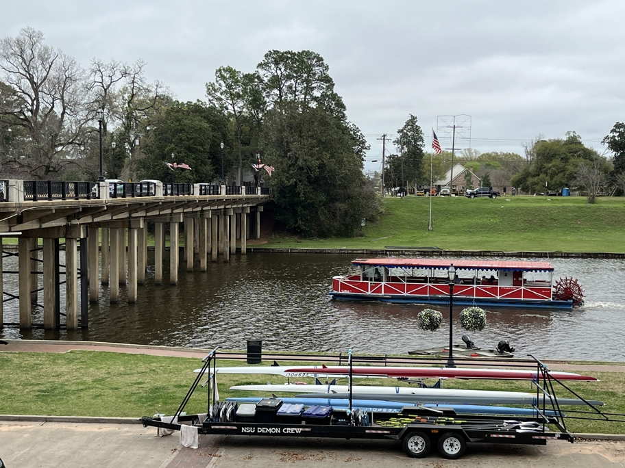

We lunched at Merci Beaucoup in the charming town of Nachitoches. It was delightful to be in Louisiana again, though only briefly. Nachitoches is on the Cane River, actually a very long oxbow lake detached from the Red River, popular with rowing teams due to its lack of current and lined with boathouses.